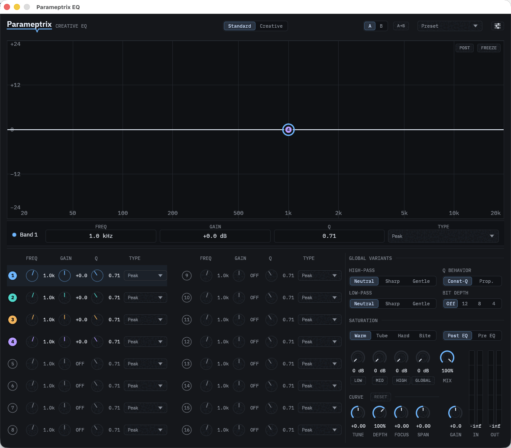

Comb
A stack of evenly spaced teeth built from one frequency. Positive polarity puts them on the harmonics — pitched and tube-like; negative puts them between, for a hollow, closed-pipe sound.
Creative EQ · VST3 · CLAP · AU
“para-MET-rix” /ˌpærəˈmɛtrɪks/ the second p is silent, as in pterodactyl.
A 16-band parametric EQ for macOS built to give sound a character, not to correct its faults — comb filters, sung-vowel formants, asymmetric bells and a spectrum tilt, over a multiband saturator. Written from scratch in Rust.
Signed & notarized by Apple · installs clean, no Gatekeeper warnings
Every release & changelog
The shapes
Every EQ has a bell, a shelf and a pair of cuts. Parameptrix has those too — and five more that exist to put something into a sound rather than take something out.
A stack of evenly spaced teeth built from one frequency. Positive polarity puts them on the harmonics — pitched and tube-like; negative puts them between, for a hollow, closed-pipe sound.
Three resonances tuned to the ratios of a sung vowel, anchored at the band's frequency. Sweep it and the sound speaks.
A bell whose two sides differ in steepness — lean on the low side or the high side and the boost stops behaving symmetrically.
Rocks the whole spectrum about the band's frequency. Lift everything above the pivot and everything below drops by the same amount.
A resonant peak with a sharper character than a bell — gain sets how far the resonance climbs.
4th-order cuts running Neutral (Butterworth), Sharp (Chebyshev, with a peak before the corner) or Gentle (Bessel) — set independently for each direction.
Plus the ones you'd expect — Peak · Low Shelf · High Shelf · Notch · Band-pass · All-pass — across sixteen slots, with Const-Q or proportional-Q bell behaviour.
Creative mode
Draw anywhere on the plot. No modifier, no tool to pick — in Creative mode the band handles step out of the way and the whole display is the canvas.
Let go, and it solves. The plugin fits up to sixteen bands to your stroke on release, not while you drag — a live re-fit makes the response thrash under the pointer. It reports how many bands it used and how far it missed by.
Hand it back. EDIT keeps the fitted curve and returns you to Standard to
work on it as ordinary bands — with one undo if that wasn't what you wanted.
The signal path
20 Hz to 20 kHz, ±24 dB, Q from 0.1 to 18 — thirteen filter types across sixteen slots, four live when you insert it.
Warm, Tube, Hard or Bite — driven per zone (low, mid, high) or across the whole signal, with a wet/dry mix and a Pre- or Post-EQ placement.
Quantise to 12, 8 or 4 bits — the aliasing left in on purpose — then ±12 dB of output, smoothed so you can ride it.
↳ and tapping into that path —
A→B to fork a variation.
Presets Plain JSON files in one folder you can open, copy and move between
machines.
The window

Drop it in
Open the installer. Double-click Parameptrix-EQ.pkg and follow the prompts —
it drops the VST3, CLAP and Audio Unit into /Library/Audio/Plug-Ins.
Rescan plug-ins in your DAW. In Ableton: Settings → Plug-Ins → Rescan. Live loads the VST3, Logic and GarageBand take the Audio Unit, and any CLAP host takes the CLAP.
Put Parameptrix on a track and drag a handle. Or switch to Creative and draw one.
Requires macOS on Apple Silicon (arm64) — Intel Macs and Rosetta aren't
supported. Your presets live in ~/Documents/Parameptrix/Presets, as plain JSON.